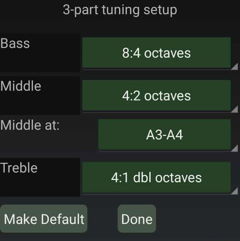

3-Part Tuning
All new tuning files are recommended to use 3-part tuning. It is called "3-part tuning" because it defines criteria for beatless intervals for three locations in the scale - at the low bass, at the high treble, and at an interval in the middle of the scale. The location of the specified bass and treble intervals are at the very bottom and the very top of the scale (A0 and C8). The location of the Middle Interval is adjustable.

The settings on this page comprise the 3-part tuning parameters for a given tuning. These settings are stored with the tuning file whenever the tuning file is stored so that each tuning can have its own setting of 3-part tuning parameters. The tuning is calculated on a note-by-note basis, starting with the Middle Interval and working outward. In the note-by-note calculation, the criteria for beatless intervals gradually transitions from the middle interval to the bass or the treble intervals as the tuning calculation progresses outward from the Middle Interval. By tapping on "Make Default" you can make the current settings be the default settings for future new tunings. Otherwise, the settings you make here will affect only the current tuning.